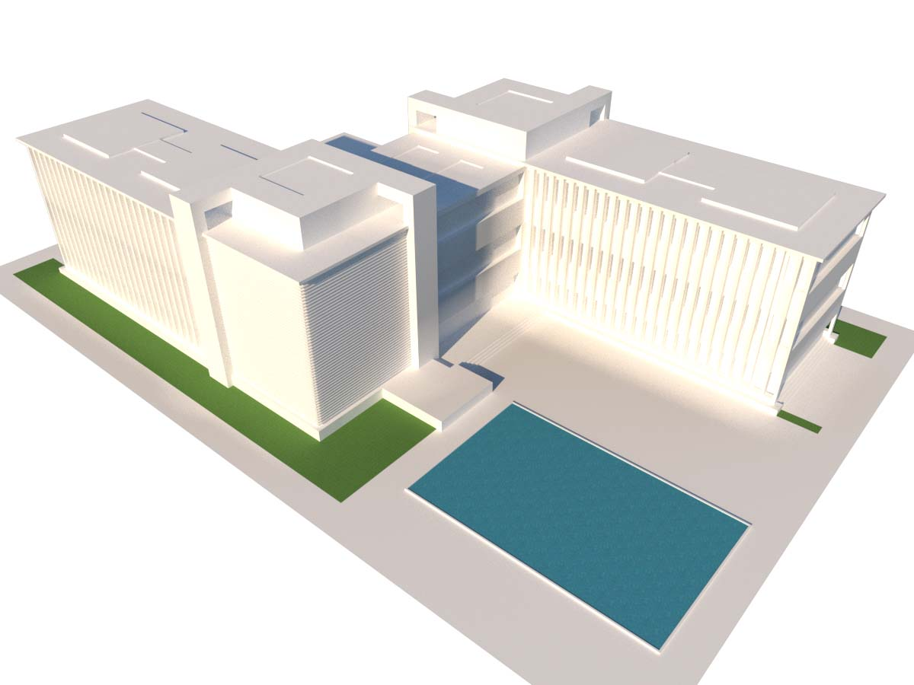
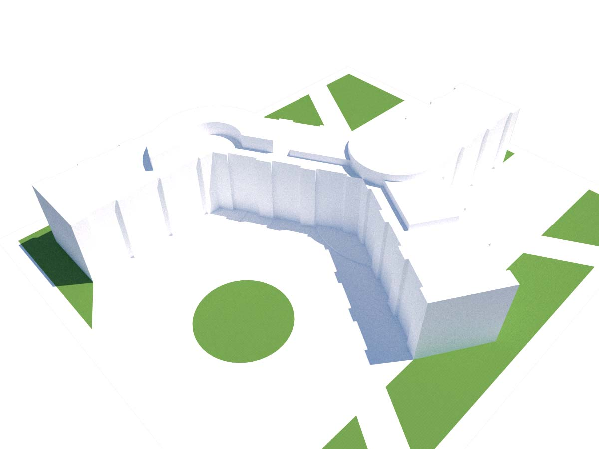

Architecture
Architecture is a hobby of mine that arose from thinking and planning about playing minecraft instead of actually doing anything in-game. I use Sketchup and V-Ray for rendering.
Source files available on request. All images and designs CC BY-NC 4.0.


Source files available on request. All images and designs CC BY-NC 4.0.
Hill House (Fall 2018)I recently discovered the TV show Grand Designs, a British series showcasing various spec house construction projects. As an excellent source of background noise, I found myself gradually gathering inspiration from the various projects featured on the show. Houses covered in living roofs or partially embedded into hillsides are frequently featured on the show. As such, I wanted to try my hand at designing a hillside house.Located in a small depression, this house attempts to hide the majority of its mass through usage of a grass roof integrated into the hill. To further hide in its environment, the house uses traditional, unremarkable materials. Light is brought to the bottom floor using a courtyard sunk into the ground, which is surrounded on two sides by the main building, on one side by a separated guest room, and on the last side by a walkway. |
      
|
BA House (Summer 2018)This summer, I worked at SLD Laser in Fremont, California. While there, I was inspired (in part by my desire to live in the Bay Area) by the architecture of the area; unlike the vast and wide McMansions of Texas, Bay Area homes simply cannot afford to waste space on frivolous detail or crude caricatures of the antebellum south.With its small, narrow, and hilly plot, this design emulates the style of a typical Bay Area home, with a slight twist. The house is wrapped around a large central courtyard with a tree. In order to make the courtyard have a reasonable size without requiring an excessively large home, one wall of the couryard is shared with the side of the building. The house is laid out with living spaces on the second floor, with a garage, workshop, and office occupying the first floor. The main entrance is hidden at the side of the building, and leads directly to the courtyard. |
    
|
Diagonal House (Fall 2017)This was my first full house design. The house is designed around two separately aligned axes, creating many interesting shapes where these axes interact to create various triangles, trapezoids, and parallelograms.The roof is fundamentally two slopes from a center ridge line; this roof shape is made more sophisticated by introducing periodic jumps, and two triangular stone towers that rise through the house. The house features extensive outdoor spaces, including a 1/2-floor-aligned balcony above the 1 1/2-floor high entrance hall clad with stained wood decking. Combined with the black, multifaceted roof geometry, the house presents a simple, yet visually appealing aerial view (which, in my opinion, is far too often neglected by Architects). |
   
|
Museum - "The Cube" (Spring 2017)My first design with a fully featured interior. This was my Art History final project; the assignment was to design an Art Museum and describe a collection of art across various periods that would be in it (I might have done a bit of extra work).The massing and concept was originally conceptualized by a friend in middle school. When I got this assignment, thought I would try to take this idea and fully form it into a complete structure. The museum is designed in a brutalist style, featuring various patterns of scored concrete arranged in sharp angles. In a slight departure from the brutalist style, the focal point of the museum is a large, glass-walled cube; various floors rise on cylindrical supports inside the cube, but never touch the exterior. In order to add color, the exposed edges of each floor are painted in bright colors, creating a color theme for each floor. |
    
|
05 (Fall 2016)This was my first design to specify any sort of interior. No materials are specified, other than grass, to represent green space, water, to depict two water features at the center, and glass.This uncreatively named (this was my 5th project) three-floor apartment complex features two long rows of two and three-floored units sized somewhere between an apartment unit and a townhouse. At the ends, larger units are intended as mixed-use commercial units. Around the center courtyard, on one side, intersecting diagonal supports and downwards-leaning windows create a half-enclosed long hall. Combined with the half-floor-aligned green space (which I imagined as a grassy area for small-scale soccer or similar sports), the center courtyard presents a unique concept for an apartment complex common area. |
     
|
Z Building (Fall 2016)One of my earliest designs; explores the interaction of various 90-degree-aligned slats of multiple scales. I imagined this as an university building with classrooms on the bottom floors, with offices and labs on the top floors. Although no interior layout is specified, I've always imagined the central section connecting the two arms as a glass-walled atrium with various walkways crossing it from one arm to the next. |
 |
Pentane (Fall 2016)Named "Pentane" since it emulates the structure of isopentane (2-methylbutane), this simple structure is the product of not paying attention in chemistry. This is the first passable design of mine that I could find. It features reasonable massing (and that's about it). |
 |